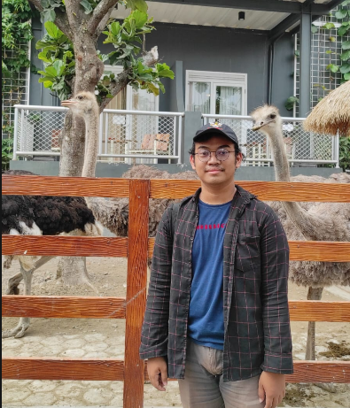
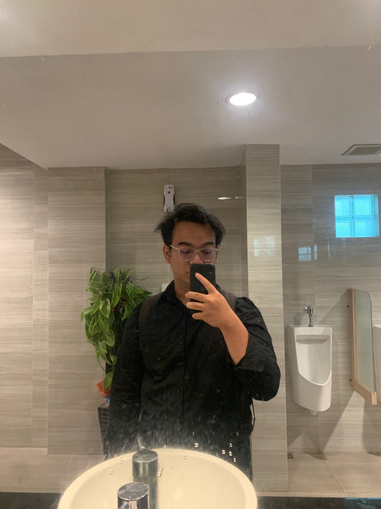
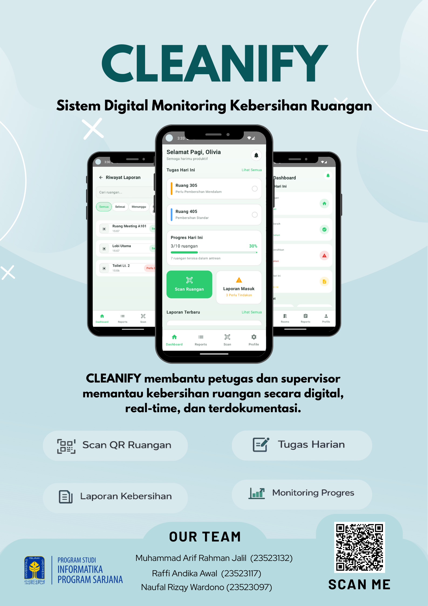
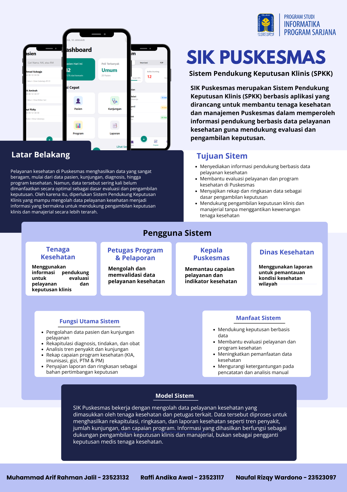
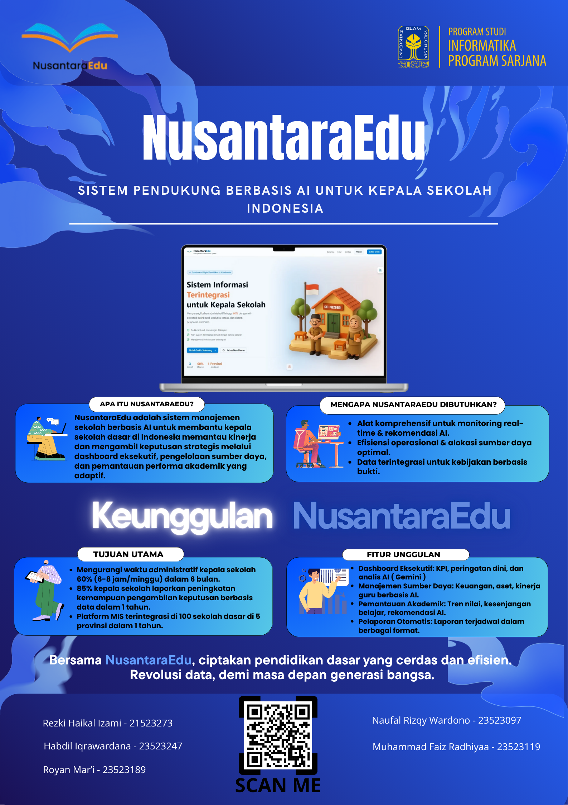

Mahasiswa Informatika Universitas Islam Indonesia dengan fokus pada UI/UX Design dan Frontend Development. Berpengalaman merancang antarmuka dan mengimplementasikannya ke dalam website dan aplikasi dengan pendekatan yang terstruktur dan berorientasi pada pengalaman pengguna.
View Projects

Saya merupakan mahasiswa Program Studi Informatika Universitas Islam Indonesia yang terbiasa mengerjakan proyek perkuliahan dan mandiri, mulai dari tahap perancangan UI/UX hingga implementasi frontend. Saya memiliki ketertarikan pada pengembangan antarmuka yang rapi, konsisten, dan mudah digunakan.
Wireframing, prototyping, user flow, dan visual hierarchy.
HTML, CSS, dan JavaScript untuk antarmuka website yang responsif.
Menyesuaikan tampilan untuk desktop dan mobile.
Figma dan Canva untuk perancangan antarmuka.
Kotlin dan Python (dasar).
Git dan GitHub.

Aplikasi monitoring kebersihan ruangan. Berperan dalam perancangan antarmuka, user flow, dan implementasi tampilan aplikasi.

Sistem informasi kesehatan puskesmas dengan fokus pada tampilan input data dan dashboard yang rapi serta mudah digunakan.

Sistem informasi sekolah dengan rancangan dashboard dan visualisasi data untuk mendukung pengambilan keputusan.
Terbuka untuk diskusi proyek, kolaborasi, serta kesempatan magang dan freelance.
Phone: 0813-2660-2713
Email: rizqynaufal31@gmail.com
GitHub: github.com/naufalriz31
LinkedIn: linkedin.com/in/naufalrizqywardono